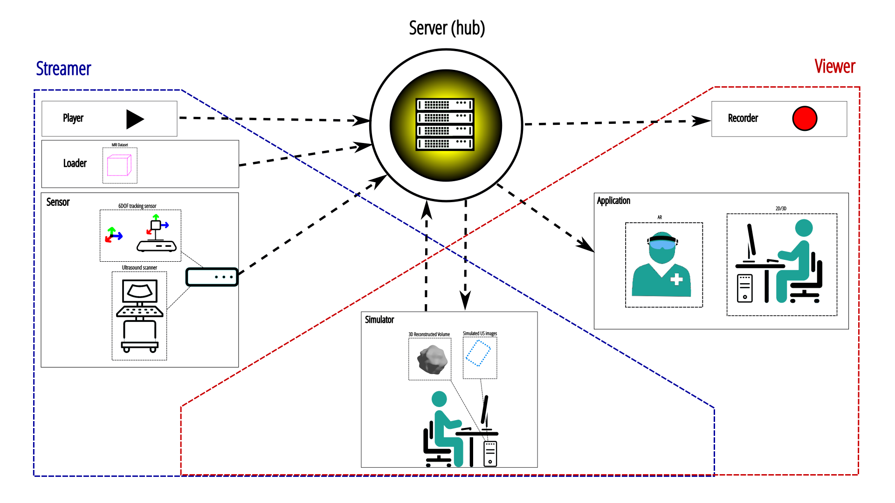

Why use it ?
This library allows the abstraction of the different data acquired by sensors using different manufactor drivers. You can write processing/visualising applications without worrying about the acquisition part. It is a reusable and modular system. It also allows several machines to work on the same data in real time.
